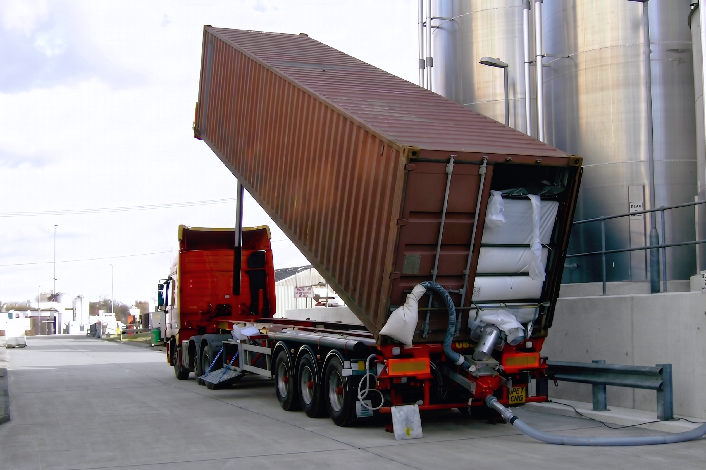
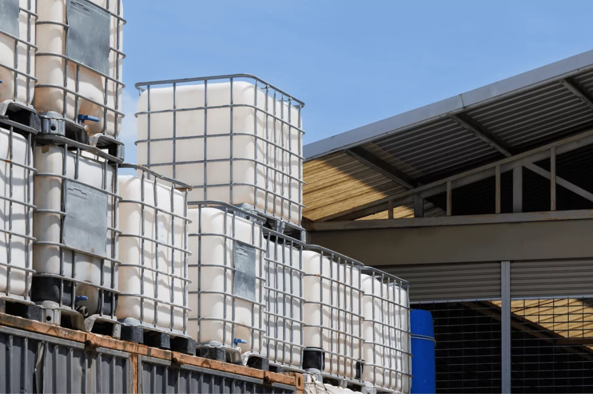
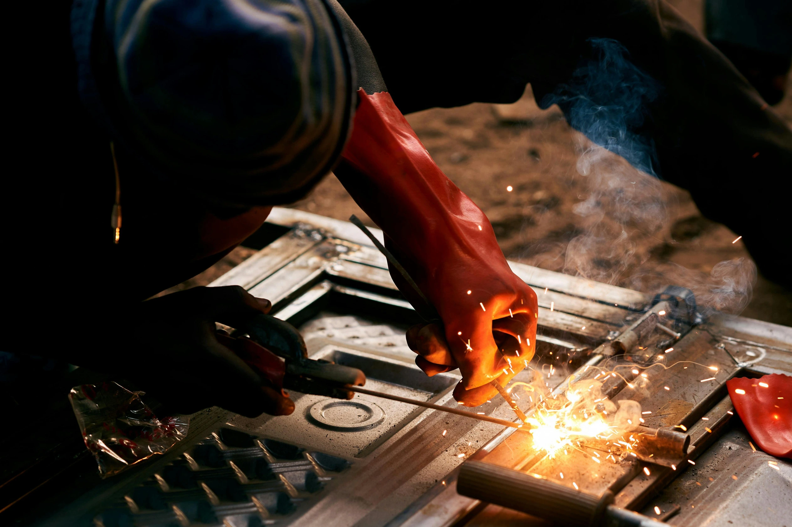

ABOUT US
Built to Supply Every Part of Brewing
We supply craft and industrial breweries with ingredients, chemicals and equipment, delivered consistently and to the right standard, every time.
What Sets SKY Apart
-
Reliable Supply, On Your Schedule
Stock when you need it, in the format you want, so your brewery keeps running without delays.
-
Direct Sourcing, Competitive Pricing
We make key products ourselves and source the rest globally, so you get strong pricing and flexible payment options.
-
Technical Expertise, You Can Rely On
Decades of brewing experience across ingredients, chemicals and equipment, helping you run better and brew consistently.

Worldwide
Global Supply, Local Service
We supply breweries across three continents and more than fifteen countries. In the United Kingdom alone, we work with over thirty breweries, from small craft producers to large industrial operations.
Whether you need a single pallet or full container loads, our approach stays the same. Orders are handled with clear specifications, consistent quality, and dependable lead times. We take care of sourcing, coordination, and logistics, managing the detail behind the scenes, ensuring everything arrives exactly as expected.
Our Story
Our Journey Started with Malt
We founded SKY AGRO in 2024 to supply brewers with high-quality malt, working directly with established malting facilities producing to our specification from barley we source. Within our first year, we had built distribution across parts of Europe and a significant export programme into Latin America and Asia, serving craft and industrial brewers alike.
In the course of that work, a pattern emerged. Brewers were managing fragmented supplier bases across malt, chemicals, and equipment, each relationship operating in isolation. Sourcing was slower and more difficult than it needed to be.
We expanded in response. SKY AGRO now operates three specialist divisions, covering ingredients, chemicals, and equipment, coordinated through a single commercial relationship.
Founded as a Malt Supplier
Supplying UK and international breweries with high-quality malt.
Malt Export and Distribution
Expanding distribution across Europe and export programmes into Latin America and Asia, serving craft and industrial brewers.
Expanding Beyond Malt
Range expands beyond malt into equipment, yeast, nutrients and adjuncts. Planning begins on UK chemical manufacturing.
Growing, and not done yet
Three divisions, international reach, and a business still expanding around what brewers need.
Our Divisions and Partners
-
INGREDIENTS
Base malts, speciality malts, and yeast, covering the full spectrum of brewing ingredients for every style and scale.
View IngredientsOUR PARTNERS

-
CHEMICALS
Hygiene chemicals, processing aids and finings, including caustics, acids, sanitisers, enzymatic cleaners and clarifiers.
View ChemicalsOUR PARTNERS

-
EQUIPMENT
End-to-end brewing equipment, including brewhouses, tanks, and a wide range of processing equipment, plus one-way kegs from 2L to 50L, for cellar and dispense.
View EquipmentOUR PARTNERS


SKY LABS
Our Chemical Facility
In late 2025, we launched our dedicated manufacturing facility in Daventry, producing hygiene chemicals, processing aids, and finings tailored to brewing and food production.
Built around the real-world needs of breweries, our range is designed to enhance cleaning performance, improve filtration and clarity, and keep production running consistently batch after batch.

SKY TECH
Our Equipment
We launched SKY TECH to supply brewing equipment that independent breweries can rely on, well-built, properly supported, and priced to make sense.
Built around the real-world needs of breweries, our systems are designed to integrate seamlessly into production, deliver consistent performance, and remain dependable through daily use.
Enough About Us. Let's Talk About You.
Whether you're scaling up production, sourcing a new ingredient, or looking for technical support, we'd love to hear from you.
Get in touch